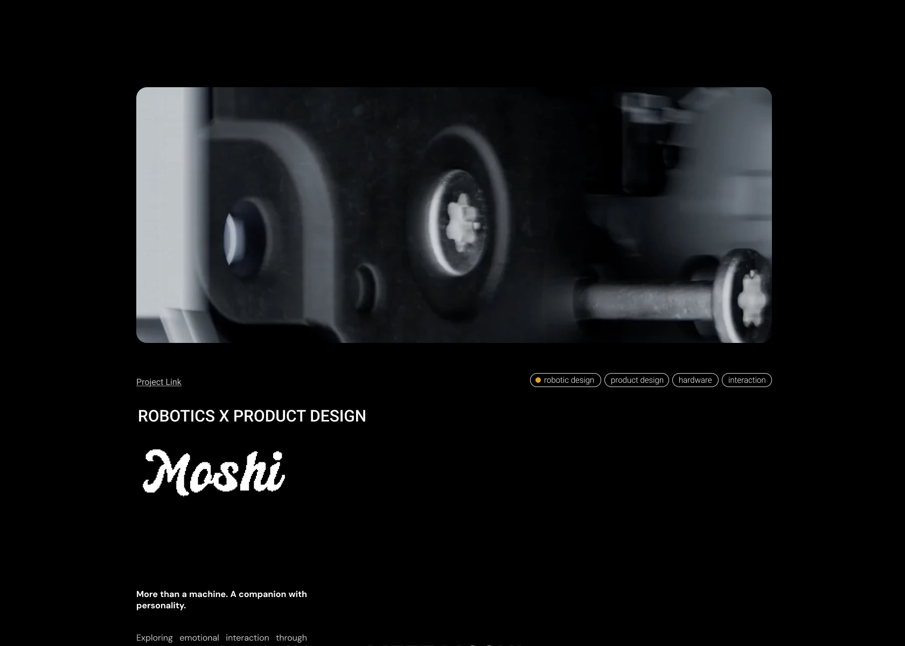
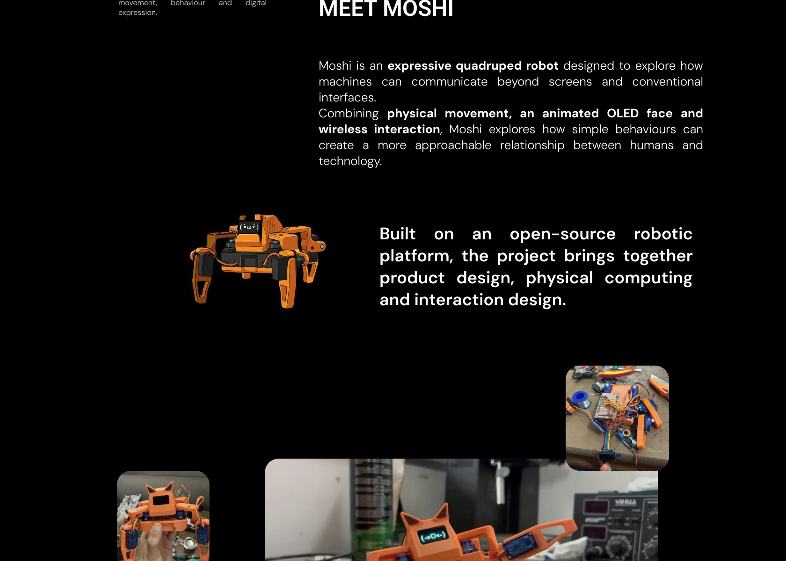
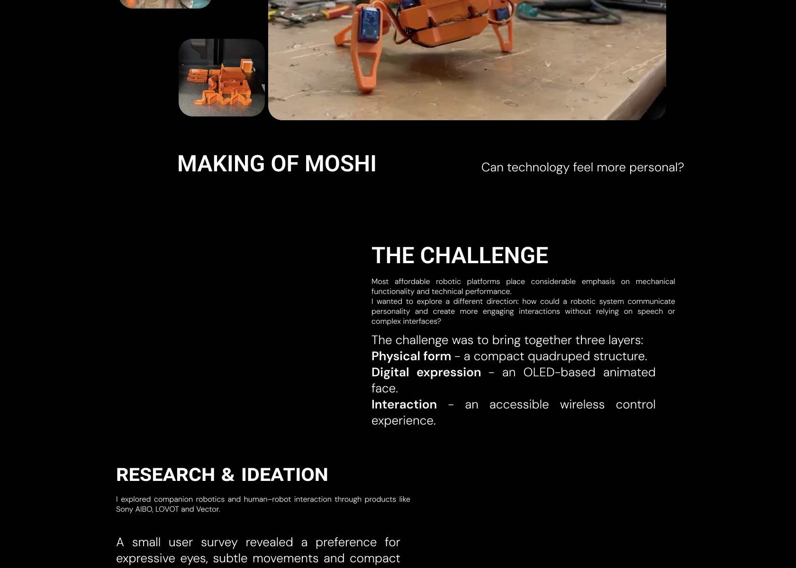
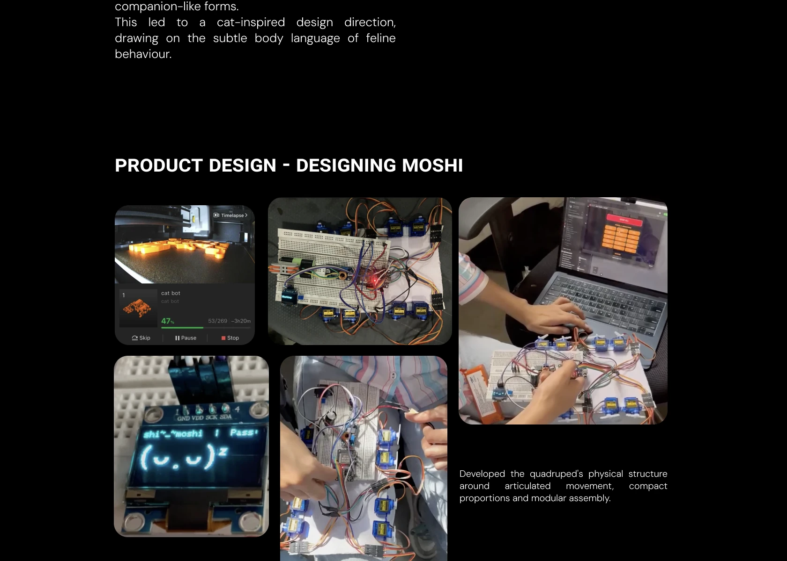
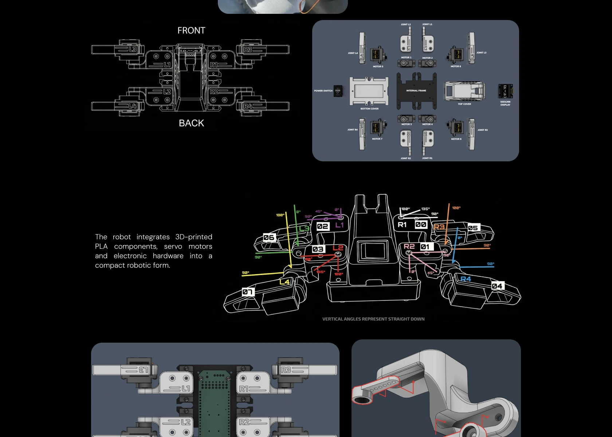
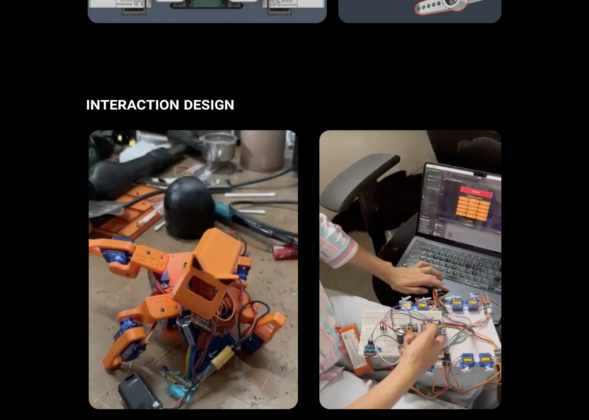
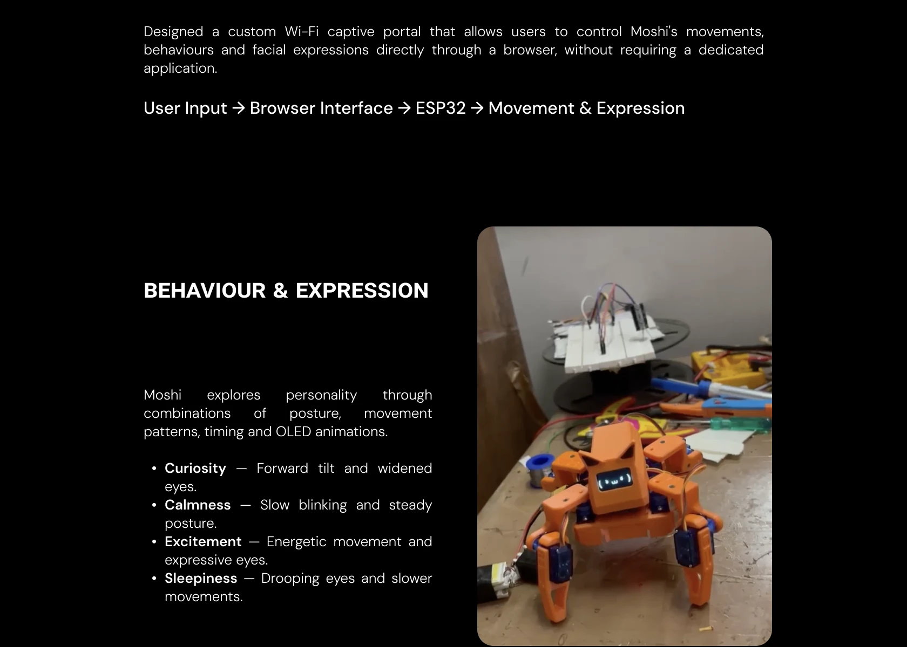
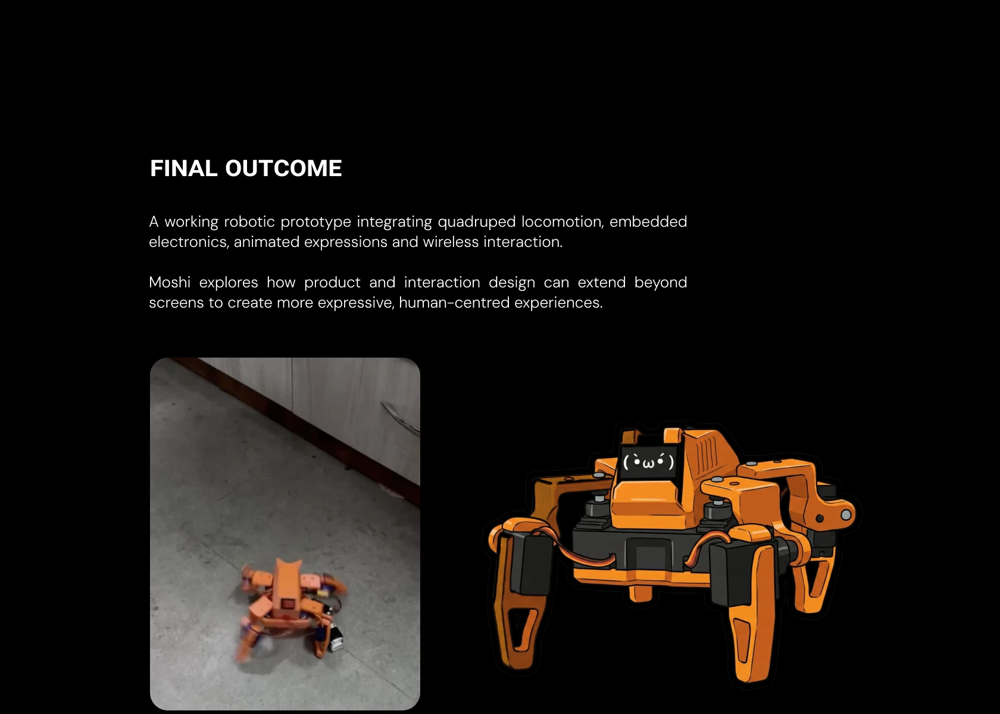
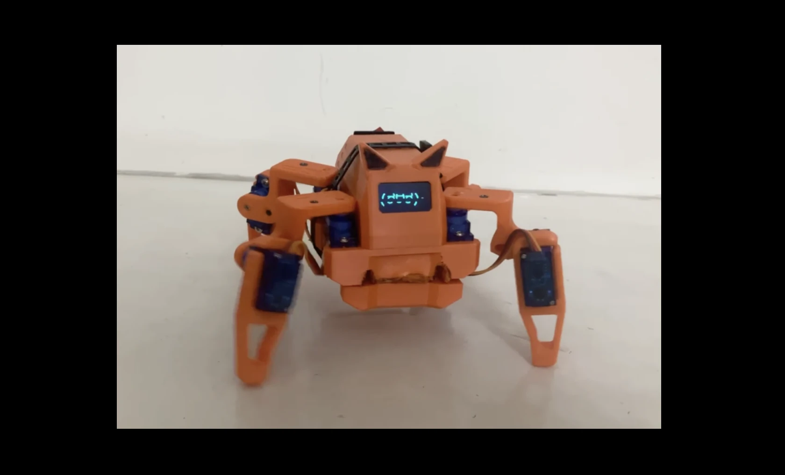

ROBOTICS X PRODUCT DESIGN
Moshi
robotic design
product design
hardware
interaction
Exploring emotional interaction through movement, behaviour and digital expression.
More than a machine. A companion with personality.
MEET MOSHI
THE CHALLENGE
Product Design - DESIGNING MOSHI
Interaction Design
Behaviour & Expression
Final Outcome
Research & Ideation
MAKING OF MOSHI
Moshi is an expressive quadruped robot designed to explore how machines can communicate beyond screens and conventional interfaces. Combining physical movement, an animated OLED face and wireless interaction, Moshi explores how simple behaviours can create a more approachable relationship between humans and technology.
The challenge was to bring together three layers: Physical form - a compact quadruped structure. Digital expression - an OLED-based animated face. Interaction - an accessible wireless control experience.
A small user survey revealed a preference for expressive eyes, subtle movements and compact companion-like forms. This led to a cat-inspired design direction, drawing on the subtle body language of feline behaviour.
Designed a custom Wi-Fi captive portal that allows users to control Moshi's movements, behaviours and facial expressions directly through a browser, without requiring a dedicated application. User Input → Browser Interface → ESP32 → Movement & Expression
Moshi explores personality through combinations of posture, movement patterns, timing and OLED animations. Curiosity — Forward tilt and widened eyes. Calmness — Slow blinking and steady posture. Excitement — Energetic movement and expressive eyes. Sleepiness — Drooping eyes and slower movements.
A working robotic prototype integrating quadruped locomotion, embedded electronics, animated expressions and wireless interaction. Moshi explores how product and interaction design can extend beyond screens to create more expressive, human-centred experiences.
Most affordable robotic platforms place considerable emphasis on mechanical functionality and technical performance. I wanted to explore a different direction: how could a robotic system communicate personality and create more engaging interactions without relying on speech or complex interfaces?
Developed the quadruped's physical structure around articulated movement, compact proportions and modular assembly.
I explored companion robotics and human–robot interaction through products like Sony AIBO, LOVOT and Vector.
Can technology feel more personal?
Built on an open-source robotic platform, the project brings together product design, physical computing and interaction design.
The robot integrates 3D-printed PLA components, servo motors and electronic hardware into a compact robotic form.